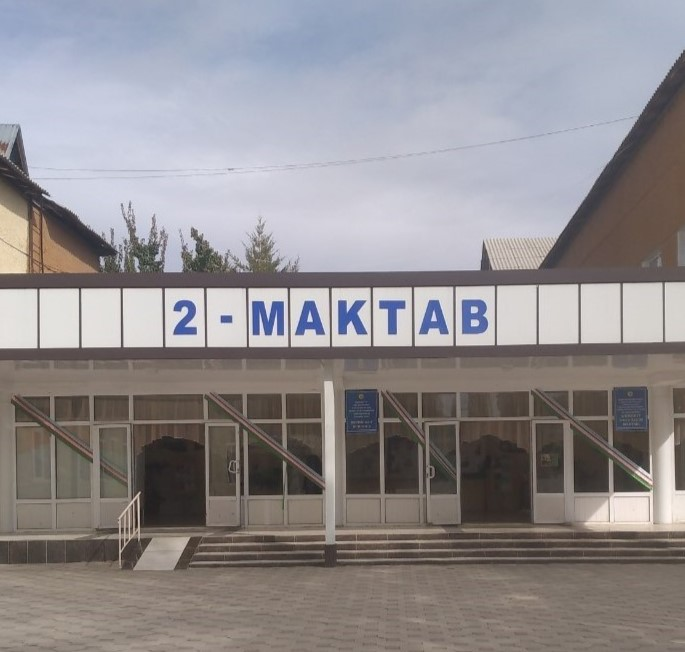

Maktabning qurilgan yili: 1-bino 1963 yil, 2-bino 1972 yil, 3-bino 1986 yil.
Dastur asosida ta'mirlangan yili va turi: 2013 yil Kapital Ta'mir
Maktabning Yuridik Manzili: Andijon viloyati, Xonobod shahri, Bunyodkor MFY, "Buyuk Zamin" ko'chasi, 1-uy
Sektor raqami: 3-sektor (shahar IIB)
Maktab maqomi: Umumiy o'rta ta'lim
Maktab Direktorining F.I.Sh: Mamutxanova Muxayyo Mo'ydinovna
Ta'lim Tili - O'zbek va Rus tili
O'quvchi o'rni (quvvati) - 1974 nafar
O'quvchilar soni - 1838 nafar
Shundan qizlar - 870 nafar
1-4 sinflar - 767 nafar
5-11 sinflar - 1071 nafar
Jami pedagoglar soni: 87 nafar
Shundan ayollar: 75 nafar
Oliy ma'lumotlilar: 75 nafar
O'rta maxsus ma'lumotlilar: 12 nafar
Mutaxassislar: 44 nafar
Yashil toifadagi o'qituvchilar: 30 nafar
Sariq toifadagi o'qituvchilar: 17 nafar
Qizil toifadagi o'qituvchilar: 18 nafar
Isitish tizimi: Alohida/Ko'mir
Intrenet tarmog'i: Ulangan
Navbatchiligi (smena): 2-smenali